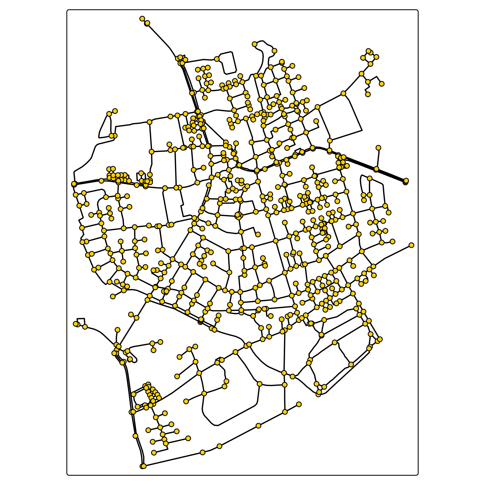
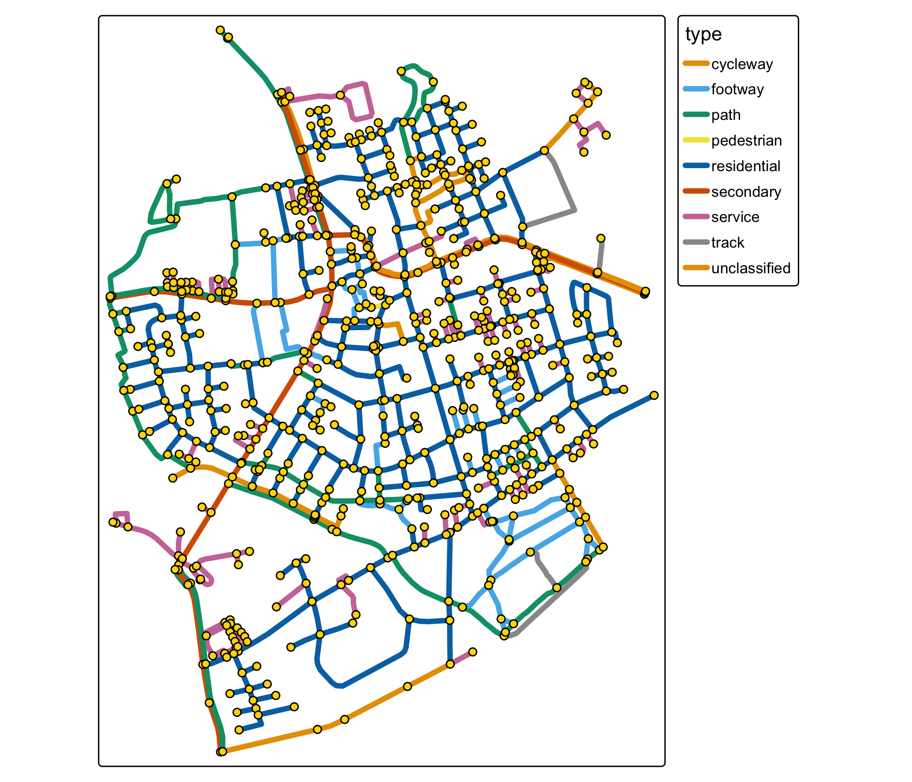
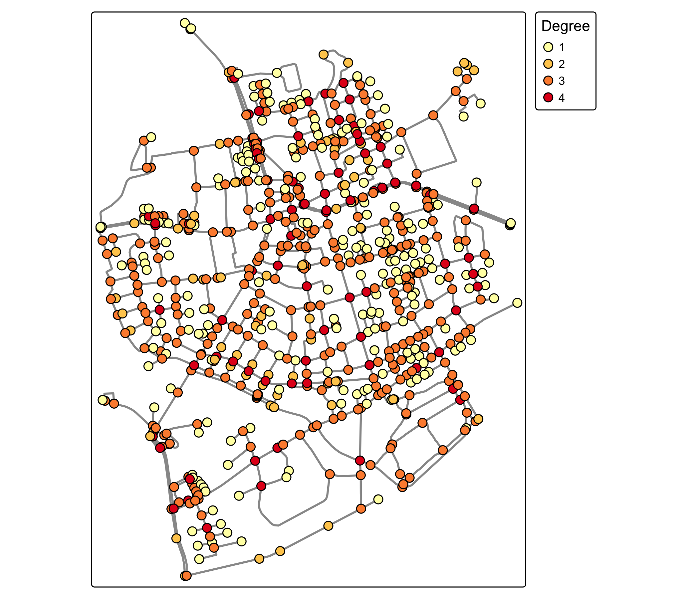
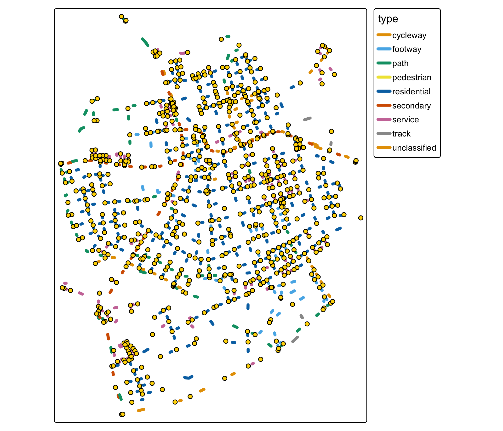
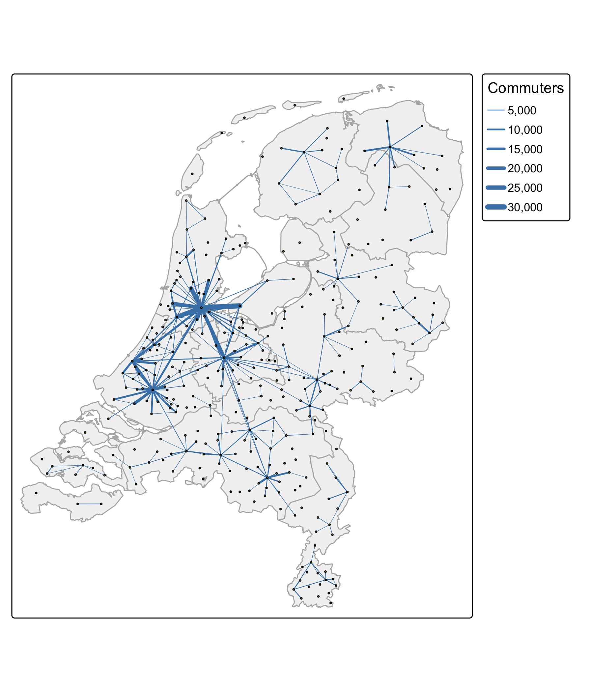
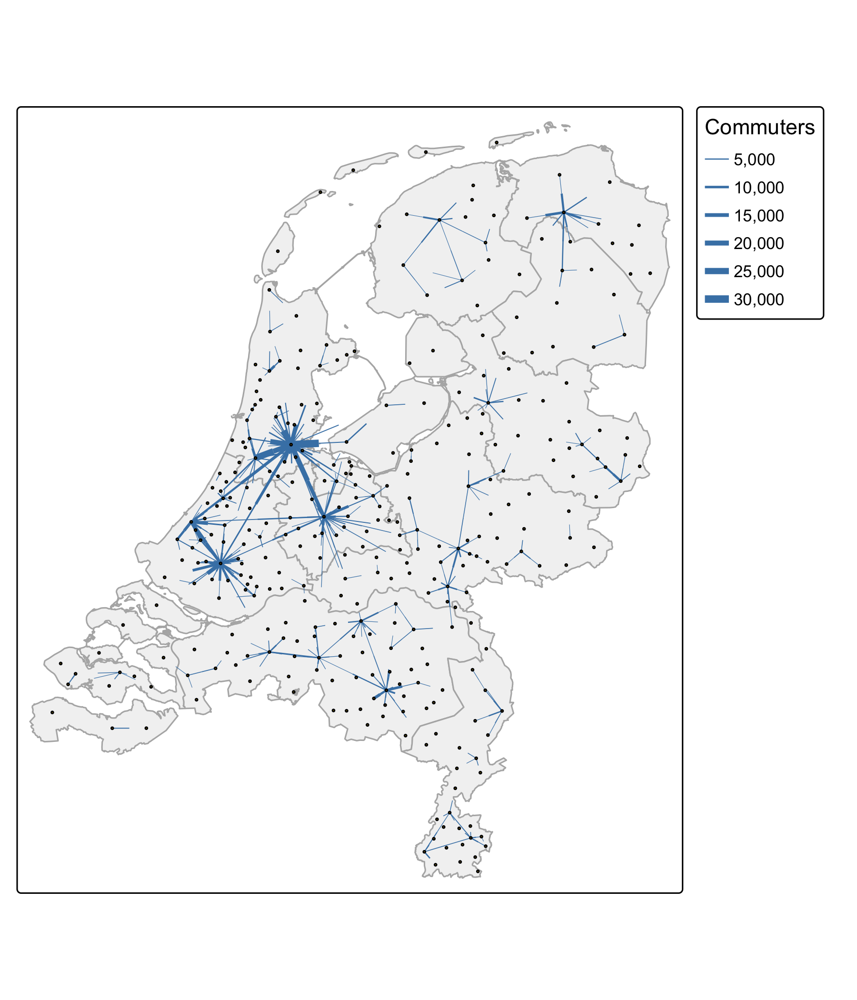
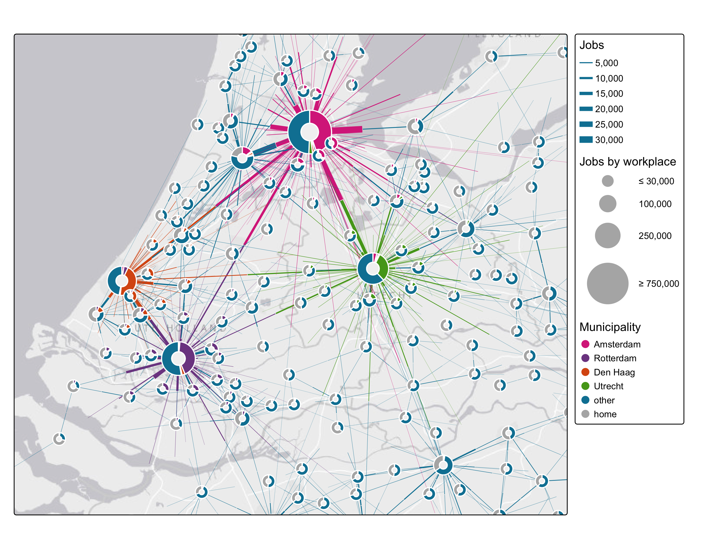
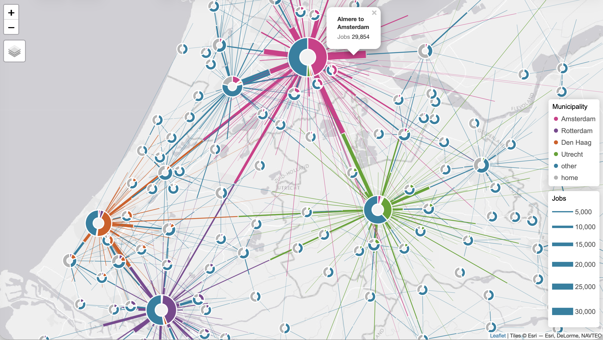

library(sfnetworks)
sfn = as_sfnetwork(roxel)
class(sfn)[1] "sfnetwork" "tbl_graph" "igraph" Session 11: Network maps
A spatial network consists of
Examples: road and river networks, public transport, origin-destination (OD) flows such as commuting and migration
The package sfnetworks combines
The extension package tmap.networks (in development):
sfnetwork objects natively as a shape in tm_shape()| Layer | Draws |
|---|---|
tm_network() |
the complete network (edges and nodes) |
tm_edges() |
the edges: a line layer (col, lwd, lty, col_alpha) |
tm_nodes() |
the nodes: a symbol layer (size, fill, col, shape, …) |


Network measures computed with tidygraph can be mapped directly:

from and tofrom and to (between 0 and 1) determine which part of each edge is drawn:
Useful for directed networks: e.g. drawing only the half of each edge near its destination.
from and to
from) and municipality of work (to)from and to as row indices of the nodesedges_as_lines = TRUE: straight lines between the node locations
Solutions:
from = 0.5)plot.order)Each edge is drawn from its middle to its destination: the direction is encoded by position.

opt_tm_edges():
offset_start, offset_end: offset (in map coordinates, usually meters) of the start and end points, e.g. to keep edges out of the node symbolsOther tm_edges() arguments:
lineend ("round", "butt", "square") and linejoinplot.order: by default, edges are ordered by line width (tm_plot_order("lwd", reverse = TRUE))Tennekes and Chen (2021) organise all (theoretically) possible visualisations of OD data in a design space:
Discuss: which method shows direction, volume and geography best? Could you build a design space for another data type?
Tennekes M, Chen M (2021). Design Space of Origin-Destination Data Visualization. Computer Graphics Forum 40(3), 323–334 (EuroVis 2021).
Donut maps with half lines (Tennekes and Chen, 2021):
from = 0.5)Tennekes M, Chen M (2021). Design Space of Origin-Destination Data Visualization. Computer Graphics Forum 40(3), 323–334 (EuroVis 2021).
The preparation is done by helper functions in R/commuting.R:
categorise(): classifies municipalities as one of the highlighted cities, "home" or "other"aggregate_od(): aggregates the OD flows per node, one column per donut slice, plus the Totalbuild_network(): builds the directed sfnetwork with the node data joined, and removes self-loops and flows below edge_minlibrary(tmap.glyphs)
palette = c("#d9328a", "#7d4791", "#da5914", "#53a31d", "#0581a2", "#B3B3B3")
bb_randstad = st_bbox(c(xmin = 60000, xmax = 175000, ymin = 405000, ymax = 505000), crs = 28992)
tm_shape(net_nodes, bbox = bb_randstad) +
tm_edges(
lwd = "Jobs",
col = "to_cat",
from = 0.5,
lineend = "butt",
lwd.scale = tm_scale_continuous(values.scale = 8),
col.scale = tm_scale_categorical(values = palette, value.neutral = palette[5]),
col.legend = tm_legend_hide(),
options = opt_tm_edges(offset_start = 100)) +
tm_donuts(
parts = tm_vars(c(name_highlight, "other", "home_part"), multivariate = TRUE),
size = "Total",
size.scale = tm_scale_continuous(
values.scale = 1.2,
limits = c(30000, 750000),
ticks = c(30000, 100000, 250000, 700000),
labels = c("\u2264 30,000", "100,000", "250,000", "\u2265 750,000"),
outliers.trunc = c(TRUE, FALSE),
values.range = c(0.3, 0.75)),
fill.scale = tm_scale_categorical(
values = palette,
value.neutral = palette[6],
labels = c(name_highlight, "other", "home")),
fill.legend = tm_legend(title = "Municipality"),
size.legend = tm_legend(title = "Jobs by workplace"),
col = "white",
lwd = 1,
options = opt_tm_donuts(fill_hole = "gray95")) +
tm_basemap("Esri.WorldGrayCanvas")
net_nodes is an sfnetwork: tm_edges() uses the edge data, tm_donuts() the node datahome_part is used for the slices: it is zero for the highlighted cities, whose own workers are already in their named slicelimits, ticks and custom labels; outliers.trunc = c(TRUE, FALSE) truncates values below 30,000 to the smallest sizevalue.neutral: the (grey/blue) color used in the size and line width legendsopt_tm_edges(offset_start = 100): offset of the start points, in map units (here meters)"other" and "home" in blue and grey, so the four highlighted cities stand out"Esri.WorldGrayCanvas") keeps the context subordinatebbox: the rest of the country could be an inset (session 10)"view" mode, sizes are relative to the screen (pixels), in "plot" mode relative to the map size — so values.scale differsThe same code in "view" mode, with hover, popup and group added to the layers:
tmap_mode("view")
tm_shape(net_nodes) +
tm_edges(..., lwd.scale = tm_scale_continuous(values.scale = 15),
group = "Flows", hover = "label", popup = tm_popup(vars = "Jobs", title = "label")) +
tm_donuts(..., group = "Donuts", hover = "name",
popup = tm_popup(vars = c(name_highlight, "other", "home", "Total"), title = "name"))
sfnetwork objects with nodes and edges; network analysis with tidygraphsfnetwork as shape; tm_network(), tm_edges(), tm_nodes()from / to draw parts of edges → half lines show direction